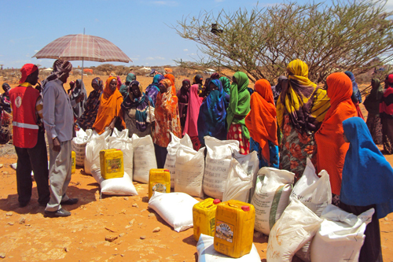

Insight Six: Drought is a cyclical disaster, so it is necessary to invest in prepositioned stock and allocate funds ahead of future responses. Flexible funding streams are essential, allowing NS to respond quickly.

A lack of funds to undertake their own immediate assessment and response was a barrier for all NS.
Pre-positioned stocks were very useful in Somalia, where ICRC used them as part of the first line response.
More early action would have been possible if partners had budgeted more flexibly within their multi-year funding and made a stronger case to back donors for doing so.
In Somalia, constant presence of ICRC and major donors such as ECHO, along with good cluster coordination, meant they were able to respond to the drought efficiently because of emergency reserve funds.
More widespread use of various flexible funding mechanisms within long-term development and resilience budgets and programs, would have supported the drought response.
National Societies need to invest more in Forecast-based Action and Forecast-based Financing in addressing drought in this region, since weather and climate forecasts have become more reliable, skillful and widely available at global, regional and national level.
NS need to adopt some of the early warning systems developed by other actors as tools and information for preparedness and response to drought. For example, the Predictive Livestock Early Warning System provides a closer picture of the impact of drought on key grazing areas and reflects the trends in forage recovery.
Disaster preparedness has increased regionally to enhance effective disaster response and management. For example, at the global level through the EWEA Ethiopia, Kenya and Somalia, critical situations are flagged quarterly, and this information is used to provide recommendations on early action in agriculture and food security.